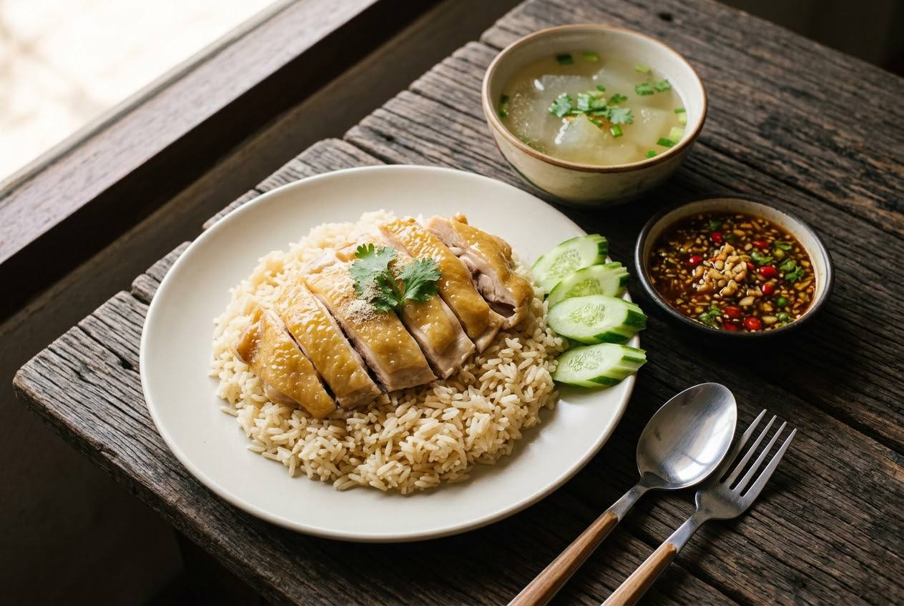

Poached chicken rubbed in its own fat, rice stir-fried in that fat with ginger and garlic, and the tao jiao dipping sauce that makes it Thai. Three countries claim this dish — here's Thailand's version.

Chicken rice began with the Wenchang chicken of Hainan, travelled with Chinese migrants, and became a national dish in three places — Hainan, Singapore and Thailand — each insisting theirs is the real one. Thailand's version is marked by two things: rice that's bolder (stir-fried in rendered chicken fat with ginger, garlic and coriander root before cooking in the chicken stock) and a dipping sauce built on tao jiao, fermented soybean paste — sweet, sour and salty in one spoon. The Singapore version skips it entirely.
The Michelin-starred chef Noom Thanintorn, who studied the dish obsessively, puts it plainly: "I studied chicken rice for a long time — each version has its signature, and sauces that might suit me or not. If I'm making chicken rice, why not make a version I like?" The recipe itself admits the dish is a family of variations. The Thai version below is the classic home one.
| Thai | English | Amount |
|---|---|---|
| ไก่สด | Whole chicken | 1 (about 1.5 kg) |
| โครงไก่ | Chicken carcass (for the stock) | 1 |
| รากผักชี (ทุบ) | Coriander roots, bruised | 3–4 |
| พริกไทยเม็ด | Peppercorns | 1 tbsp |
| กระเทียม (ทุบ) | Garlic, bruised | 1 tbsp |
| น้ำเปล่า | Water | 4 litres |
| เกลือ | Salt | 1 tbsp |
| น้ำตาลทรายแดง | Brown sugar | 2 tbsp |
| ซีอิ๊วขาว | Light soy sauce | 2 tbsp |
| Thai | English | Amount |
|---|---|---|
| มันไก่ | Chicken fat, rendered | ~250 g raw fat, melted |
| ข้าวหอมมะลิ | Jasmine rice, rinsed | 2 cups |
| น้ำซุปไก่ | Chicken stock (from the poach) | 500 ml |
| ขิง (ทุบพอแตก) | Ginger, lightly bruised | 1 tbsp |
| กระเทียม (ทุบ) | Garlic, bruised | 1 tbsp |
| รากผักชี | Coriander roots | 2 |
| เกลือ | Salt | 1 tsp |
| น้ำตาลทราย | Sugar | 1 tsp |
| Thai | English | Amount |
|---|---|---|
| เต้าเจี้ยว | Tao jiao (fermented soybean paste) | 6 tbsp |
| ขิง | Ginger | 2 tbsp |
| กระเทียม | Garlic | 2 tbsp |
| พริก | Fresh chillies | 2 tbsp |
| น้ำตาลทราย | Sugar | 5 tbsp |
| น้ำตาลมะพร้าว | Coconut sugar | 2 tbsp |
| ซีอิ๊วดำหวาน | Dark sweet soy | ½ tbsp |
| น้ำส้มสายชู | Rice vinegar | 8 tbsp |
| น้ำร้อน | Hot water | 3 tbsp |
| ฟักอ่อน | Winter melon (for the soup) | 200 g |
| แตงกวา | Cucumber, to serve | ½, sliced |
The chicken: brined overnight in water with coriander roots, cardamom, cloves, palm sugar, salt and Chinese white wine, then rolled and cooked sous-vide at 68°C for 25 minutes — or poached gently for the same result at home.
The rice: saffron added to the fat-fry with ginger, coriander root, shallots, pandan and lemongrass, then cooked in stock — his tribute to the Malay and Chinese versions.
His sauce: 120 g good tao jiao + 30 g miso, a syrup of 50 g sugar in 50 g water, 60 g rice vinegar, 30 g dark sweet soy, 50 g sliced chillies, 60 g minced old ginger, 30 g young ginger, 60 g minced garlic. That miso-and-tao-jiao pairing is the professional trick.
Hainan: yellow, firmer skin from a turmeric bath, tighter-textured meat, simpler rice.
Singapore: the chilli-ginger-garlic sauce leads; rice is lighter and less seasoned; often no soy-based sauce at all.
Thailand: bolder rice (chicken fat + ginger + garlic + coriander root), the tao jiao sauce, plus the winter-melon soup and the blood-tofu cube on the side.
All three descend from the same Hainanese dish — the differences are documented, not debated away.
This recipe is translated from the following Thai-language sources. Where they disagree, we've said so.
1. Michelin Guide Thailand (26 Nov 2021) — "สูตร 'ข้าวมันไก่เบญจาสูตรพิเศษ' ตำรับเชฟระดับร้านรางวัลดาวมิชลิน" (Chef Noom of Chim by Siam Wisdom) — guide.michelin.com
2. Pantip thread 39676309 — "วิธีทำข้าวมันไก่จากหม้อหุงข้าว พร้อมสูตรน้ำจิ้มและน้ำซุป" (classic home method, fully quantified) — pantip.com
3. Pantip thread 42659361 — "ข้าวมันไก่ไหหลำ ข้าวมันไก่สิงคโปร์ แตกต่างจากข้าวมันไก่ไทยยังไง" (the three-version comparison) — pantip.com
4. Kapook — "11 สูตรน้ำจิ้มข้าวมันไก่" (dipping-sauce variations) — cooking.kapook.com